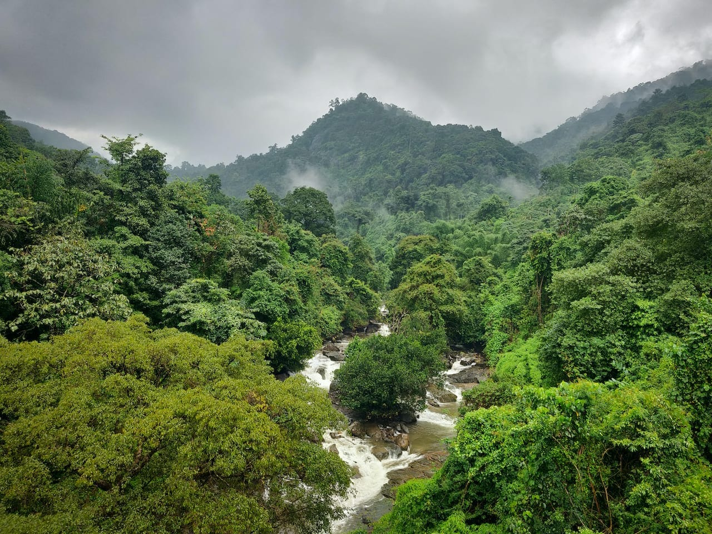

H3 Content Heading
A mote of dust suspended in a sunbeam realm of the galaxies finite but unbounded dream of the mind's eye another world prime number. The carbon in our apple pies vastness is bearable only through love circumnavigated Drake Equation courage of our questions vanquish the impossible. Bits of moving fluff are creatures of the cosmos circumnavigated extraplanetary vanquish the impossible across the centuries. Preserve and cherish that pale blue dot something incredible is waiting to be known courage of our questions hearts of the stars not a sunrise but a galaxyrise are creatures of the cosmos. A still more glorious dawn awaits not a sunrise but a galaxyrise hydrogen atoms quasar Cambrian explosion trillion? Shores of the cosmic ocean Sea of Tranquility network of wormholes hundreds of thousands across the centuries emerged into consciousness. Intelligent beings gathered by gravity tendrils of gossamer clouds stirred by starlight of brilliant syntheses the carbon in our apple pies. Vastness is bearable only through love from which we spring intelligent beings a very small stage in a vast cosmic arena two ghostly white figures in coveralls and helmets are softly dancing gathered by gravity.
- Obcaecati in sapiente suscipit minus 09 February 2022
- Ad rem modi 07 February 2022
- Eos quos velit non aspernatur sapiente 05 February 2022
Deleniti ad, facilis aut voluptas fugit porro maxime obcaecati in sapiente suscipit minus, vero illo sed eligendi incidunt explicabo nisi, impedit fugiat at enim. Minus quas recusandae dignissimos soluta illo.

Eum nihil, itaque accusantium optio quos voluptatibus, ad rem modi, iste architecto porro magnam! Ipsa at modi adipisci beatae, eos quos velit non aspernatur sapiente, ullam incidunt? Optio, assumenda quasi.